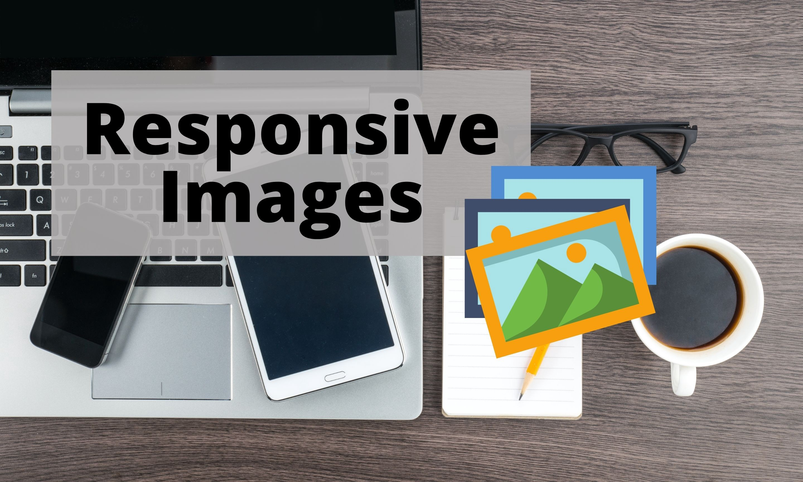
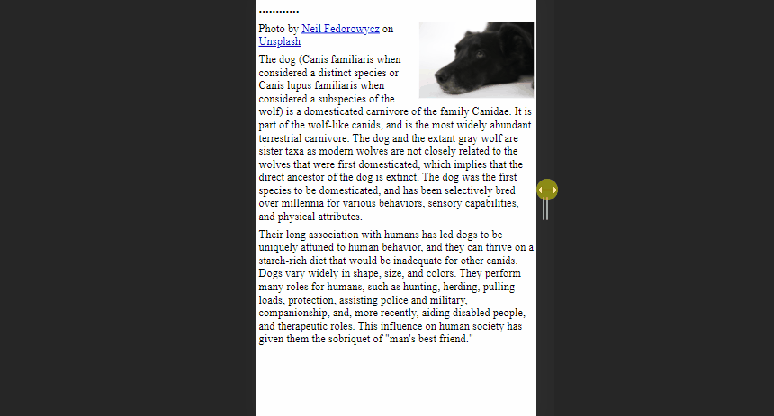
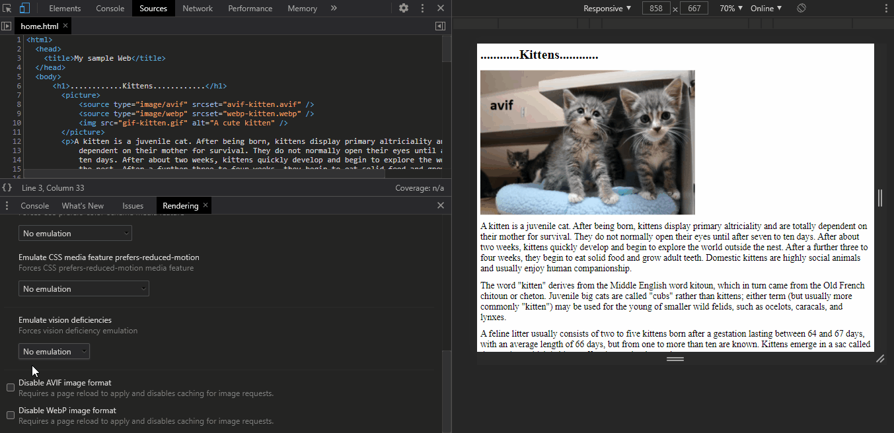

实现响应式图像的四种技术策略

创建响应式图像并不像是火箭科学那么的深奥，我相信你已经使用 CSS 创建了很多类似工具。然而，当谈到响应式图像时，灵活的尺寸只是其中的一个因素。
有时根据不同的设备类型，我们需要调整图像质量甚至图像类型，以获得更好的用户体验。
今天，我们有了不同的技术帮助我们加载合适的质量和尺寸的图片。本文将探讨这些方法，帮助你找到最适合你项目的方法。
响应式图像方法简介
- 基于设备像素方法：这种方法使用同一图片的多个版本。它会以不同的分辨率来选择最合适的一个图片来渲染。这种方法比较适合不渲染高分辨率图像的设备。
- 流式图像方法：默认情况下，图像不是流式的，因而当屏幕尺寸改变时，它们往往会被裁切或仍然保持一个固定的尺寸。使用流式图像方法，我们就可以将图像放入到响应式布局中，并根据需要拉伸或收缩。
- 艺术指导方法：艺术指导是我们在处理不同屏幕尺寸时普遍采用的方法。我们可以通过改变图片内容，裁剪图片，或者根据用户的屏幕尺寸使用不同的图片来解决这个问题。
- 类型切换方法：有些浏览器和设备不支持 WebP 等现代图像类型。类型切换方法可用于在图像类型之间进行切换，从而允许你基于设备和浏览器的兼容性向用户提供最佳内容。
既然你了解了这些方法和它们最适用的场景，那就让我们看一下如何实现这些方法。
实现响应式图像方法
如上文所述，有多种实现响应式图像的方法。了解这些方法的最佳实现方式，从而让你的项目获得最大收益是非常重要的。
默认情况下，HTML 提供了几个优秀的标签和属性，如 img、picture、size 和 srcset，用于 Web 开发中的图片渲染。现在，我将向大家展示如何使用这些标签和属性在短时间内实现上述方法。
1. 基于设备像素方法
在深入探讨之前，我需要解释一下有关高密度显示屏的信息。现代旗舰移动设备（例如三星 Galaxy S10）具有 4 倍的密度显示屏，而某些经济型机型可能只有低密度显示屏。
如果我们在低密度的显示屏中推送加载高密度的图片，那么会导致用户体验非常差，而且会浪费资源。因此，我们需要针对不同的设备像素比使用不同的图像。
在如下示例中，我们对比了两张图片。320×240 像素的 small-kitten.jpg 图像和 640×480 像素的 large-kitten.jpg 图像，显然后者适合高分辨率显示。（x 描述符表示预期的设备像素比）
<img
srcset="small-kitten.jpg 1x, large-kitten.jpg 2x"
src="small-kitten.jpg"
alt="A cute kitten"
/>
如果用户的设备分辨率高于 640×480 像素，则将渲染 large-kitten.jpg 图像，否则，将渲染 small-kitten.jpg 图像。最重要的是，具有低分辨率设备的用户不会感到图像加载时间有任何延迟，而具有高分辨率设备的用户不会感到图像质量有任何问题。
2. 流式图像方法
这种方法的核心在于使用同一图像的不同尺寸，而不是使用不同的图像。
例如，我们可以通过给出相对比例的图像大小而不是给出精确的像素值来实现简单的流式图像。最常用的方法是 max-width:100%。
<img
src="black-dog.jpg"
style="max-width: 100%;
height: auto;"
alt="Black dog image"
>

如你所见，上面的图像可以自由缩放并适应浏览器窗口大小。在文章头图较大时，该方法将是理想的选择。
此外，还有一种使用流式图像的高级方法，可以使用图像的宽度和页面的整体宽度来计算尺寸。
例如，考虑一个 1200px 宽的网页和一个 500px 宽的图像。然后，按照如下方法计算图像在页面上占用的空间：
图像宽度占用量 = 图像宽度 / 页面宽度
(500/1200) x 100% = 41.66%
然后，我们可以在下面的代码块中使用这个值。它将使图像始终与网页大小保持相同比例。
<img
src="black-dog.jpg"
style="float: right;
width: 41.66%;"
alt="Black dog image"
>

但是，当视口太大或太小时，这种计算可能会引起一些问题。
我们可以通过给图像添加以像素为单位的最大宽度和最小宽度来设置上限和下限，从而解决这个问题。
<img
src="black-dog.jpg"
style="width: 41.66%;
max-width: 500px;"
alt="Black dog image"
>
3. 艺术指导方法
艺术指导方法的核心是根据设备的屏幕大小显示不同的图像。我们可以通过切换到 picture 标签而不是使用 img 标签来做到这一点，因为它允许在不同的设备上查看时提供多比例或多焦点的图像。

像下面这样简单的代码片段就可以得到上述结果。这里，我们在 <source> 元素中提供了 2 个不同的属性值：media 和 srcset 分别定义了图像的大小和来源。
<picture>
<source media="(min-width: 650px)" srcset="kitten-stretching.png">
<source media="(min-width: 465px)" srcset="kitten-sitting.png">
<img src="kitten-curled.png" alt="A cute kitten">
</picture>
在上面的示例中，如果屏幕尺寸大于 560px，浏览器将显示第一张图片的图像。如果屏幕尺寸大于 465px 且低于 650px，浏览器将使用第二张图片。
你会注意到常规的 <img> 标签是 <picture> 元素的最后一个嵌套标签。使用 <img> 元素对于代码是否能够正常工作至关重要 —— 当媒体查询中的条件不匹配时，它将作为备选方案，并且会兼容不支持 <picture> 元素的浏览器。
4. 类型切换方法
随着技术的飞速发展，avif、webp 等不同类型的现代图像类型日渐被引入。虽然它们提供了更高的用户体验，但是有些浏览器还不支持这些图像类型。
因此，我们可以通过改变图像格式来使用类型切换去解决这种情况。
例如，下面的代码包含 2 种现代图像类型和 gif 图像。首先，浏览器将尝试 avif 格式，如果失败，它将尝试 webp 格式。如果浏览器不支持这两种格式，它将使用 png 图像。
<picture>
<source type="image/avif" srcset="avif-kitten.svg" />
<source type="image/webp" srcset="webp-kitten.webp" />
<img src="kitten.gif" alt="A cute kitten" />
</picture>
你也可以使用 Chrome DevTools 来模拟这一点，看看当浏览器不支持现代图像类型时，你的图像会是什么样子。

总结
我相信现在大家对可以用什么方法来实现响应式图像，以及它们大多适合什么情况有了一定的了解。
开发任何 Web 应用程序时，请确保充分利用这些知识，因为以正确的方式实现响应式图像有助于提供更好的用户体验。
因此，我希望大家尝试这些方法，并在评论区分享你的想法。
感谢你的阅读！
如果发现译文存在错误或其他需要改进的地方，欢迎到 掘金翻译计划 对译文进行修改并 PR，也可获得相应奖励积分。文章开头的 本文永久链接 即为本文在 GitHub 上的 MarkDown 链接。
掘金翻译计划 是一个翻译优质互联网技术文章的社区，文章来源为 掘金 上的英文分享文章。内容覆盖 Android、iOS、前端、后端、区块链、产品、设计、人工智能等领域，想要查看更多优质译文请持续关注 掘金翻译计划、官方微博、知乎专栏。